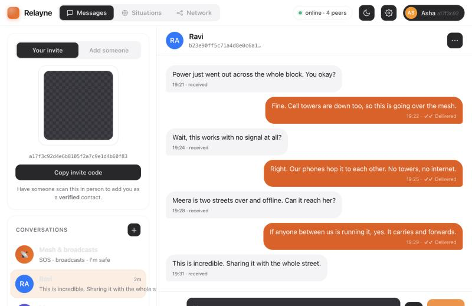
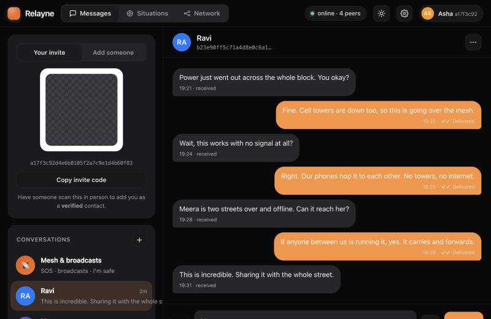
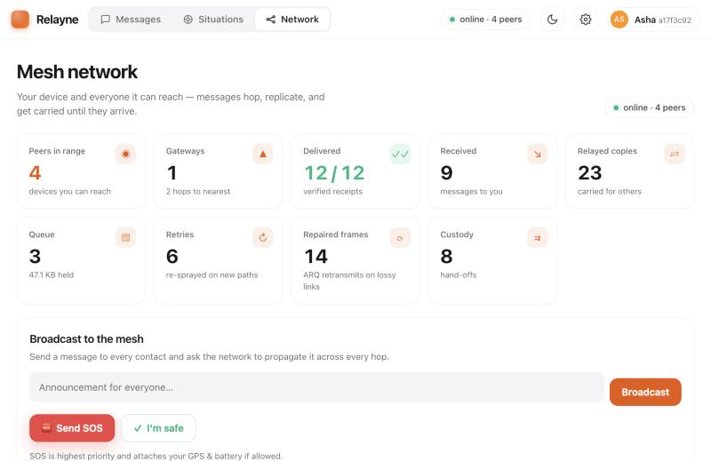
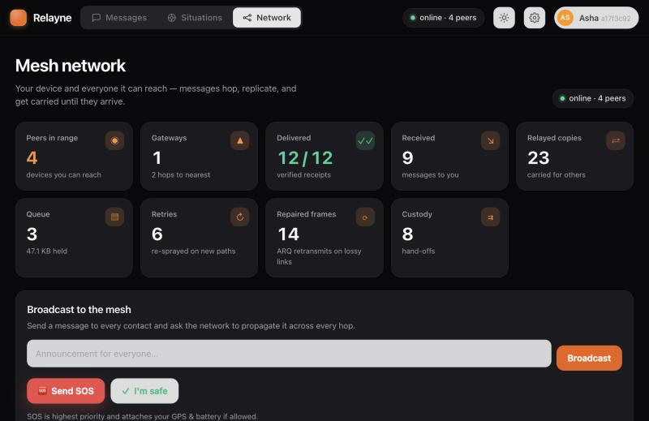

Disasters
Cell sites fail first. Route around the damage.
Encrypted messages, phone to phone. No towers, no servers, no accounts.
Alpha, and honest about it. Phone-to-phone Bluetooth is still shipping, and it hasn’t been security-audited, so don’t rely on it in a real emergency yet. What works today →


A network no company runs and no government can switch off.
Cell sites fail first. Route around the damage.
No power grid or ISP required.
The denser the crowd, the stronger the mesh.
Stay connected past the last bar of signal.
Phone to phone, with no server in the middle.
Sealed end-to-end before it leaves your phone.
Hops to every Relayne phone in Bluetooth or Wi-Fi range.
Out of range? It waits in a pocket and travels on.
Only the recipient opens it. A signed receipt comes back.
Every relay is blind. Phones move a sealed envelope they can’t read.
Built for emergencies, expeditions, and crowds.


Sealed on your device. Only the recipient can open it, forward-secret.
Always onNo router. No base station. Routes rebuild as people move.
Bluetooth LE + Wi-FiYour GPS, broadcast above all other traffic.
Emergency priorityDirection and distance to your people, live.
LiveAlert everyone in a radius, not a contact list.
BroadcastA whole crew in one encrypted channel.
Multi-partyOne gesture erases every message, key, and trace.
Duress-readyA signed receipt only the recipient could produce.
VerifiableOne phone with signal drains the whole mesh to the internet.
Opportunistic bridgeRuns for days in your pocket. Reaches further on Wi-Fi.
All-day enduranceShared live maps for a search, a hike, a meet-up. No cloud.
In previewOne mesh, many situations.
When infrastructure is rubble.
Miles past the last tower.
When 50,000 phones jam the towers.
Under shutdowns. Nothing to block or seize.
Where towers simply don’t reach.
A private network for a place.
Others solve pieces. Relayne needs no infrastructure at all.
| Capability | Relayne | Briar | bitchat | Meshtastic | Nostr |
|---|---|---|---|---|---|
| Works with no internet or cell | Yes | Yes | Yes | Yes | No |
| Phone-to-phone, no extra hardware | Yes | Yes | Yes | Needs LoRa radio | No |
| Carries messages across gaps (delay-tolerant) | Yes | Limited | Limited | Limited | No |
| End-to-end encrypted | Yes | Yes | Yes | Channel keys | DMs only |
| No account or phone number | Yes | Yes | Yes | Yes | Yes |
| Group messaging | Yes | Yes | Yes | Yes | Partial |
| SOS + live location | Yes | No | No | Yes | No |
| Opportunistic internet bridge | Yes | Via Tor | Via Nostr | MQTT | Is the internet |
| Open source | Yes | Yes | Yes | Yes | Yes |
Comparison reflects each project's typical capabilities as of 2026 and is meant to be fair rather than exhaustive; all of these are worthwhile open-source projects. Corrections welcome via an issue.
Not a setting. The only way it works.
Nothing to sign up for. Keys stay on your device.
Every hop moves a sealed envelope.
Keys rotate constantly. Yesterday stays locked.
No database of who talked to whom. Ever.
Destroy every trace in one gesture.
Public protocol and app. Verify it yourself.
No black boxes. Read it, run it, improve it.
Rust core, continuously fuzz-tested.
Scanned and scored on every change.
A whitepaper spells out how it works.
Issues and contributions open to all.
Relayne is in open alpha. Explore the code, run the mesh, and help shape a network that belongs to everyone and to no one.